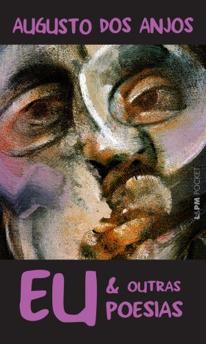

Eu e Outras Poesias

"Eu e Outras Poesias", de Augusto dos Anjos, publicado em 1904, é uma obra marcante do simbolismo brasileiro, caracterizada por uma linguagem crua e sombria. O poeta explora temas como a morte, o sofrimento humano e a efemeridade da vida, usando imagens fortes de decomposição e angustia existencial. Sua poesia mistura simbolismo com elementos científicos e filosóficos, criando uma visão fatalista e pessimista da condição humana. A obra é uma reflexão profunda sobre a dor e a morte, com críticas à sociedade da época e uma busca por compreender a realidade do ser humano diante do caos e da finitude.